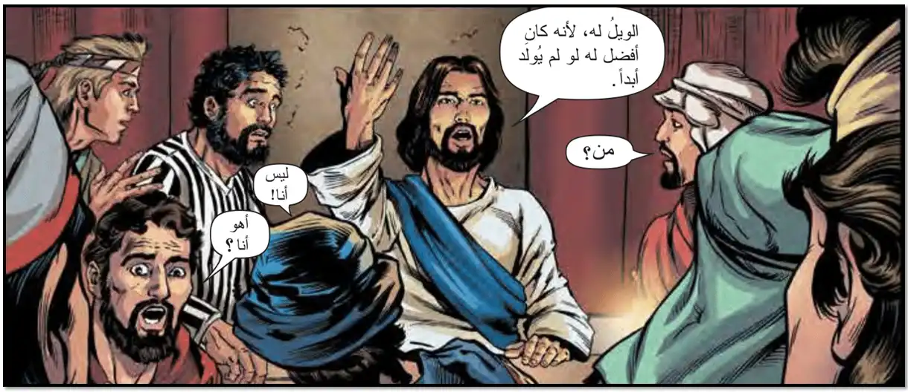
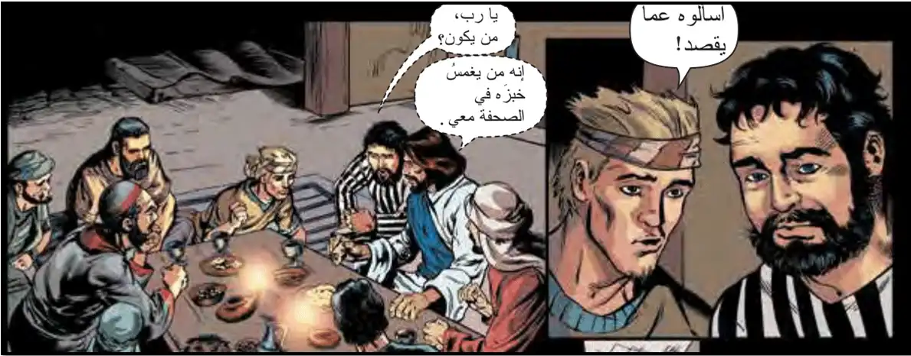
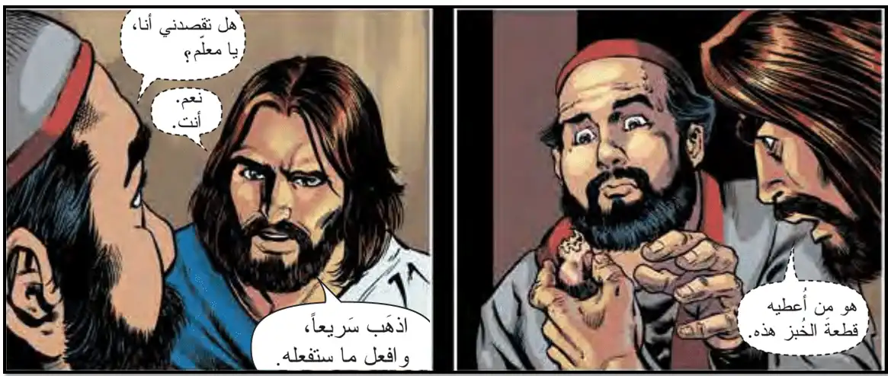
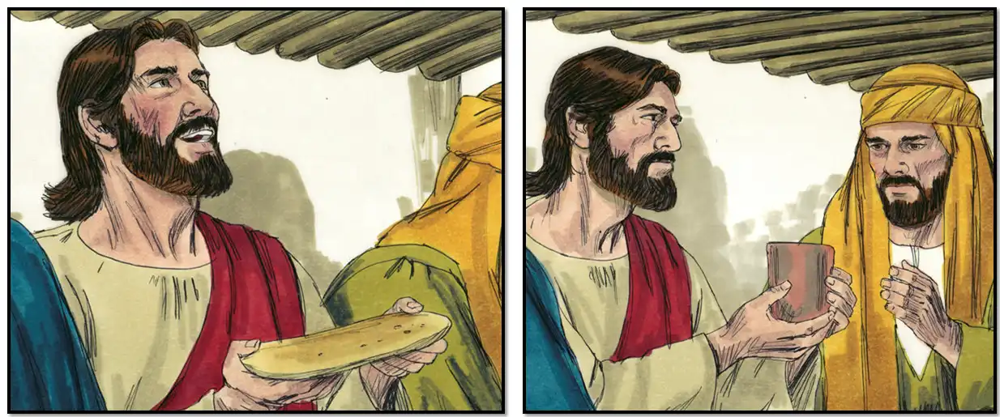
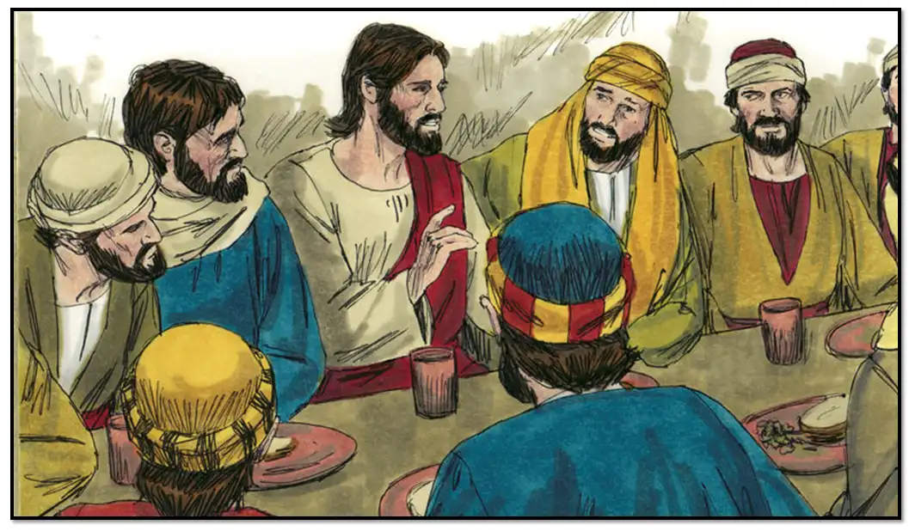

| الانجيل |
| يقول الشماس مقدمة المزمور |
| من مزامير وتراتيل ابينا داود النبي والملك الطاهر، بركاته على جميعنا امين |
| ( مزمور 22: 4، 5 40: 8 ) |
|
هَيَّأتَ قُدَّامِى مَائِدَةً تُجَاهَ الَّذِينَ يُضَايقُونَنَي. الَّذِي أَكَلُ خُبْزي رَفَعَ عَليَّ عَقِبهِ |
| في ختام المزمور يقول الشعب |
| الليلويا |
| يقول الشماس مقدمة الانجيل |
| مبارك هو الأتى باسم الرب، ربنا والهنا ومخلص نفوسنا كلنا ربنا يسوع المسيح ابن الله الحى لذى له المجد الدائم |
| يقول الشعب |
| الى الابد آمين |
|
الإنجيل من بشارة مُعلِمنا مار مَتَّى البشير بركته على جميعنا. آمين
( مَتَّى 26: 20 - 29 ) |
|
 وَلَمَّا كَانَ الْمَسَاءُ اتَّكَأَ مَعَ تَلاَمِيذهِ الاثْنَيْ عَشَرَ. وَفِيمَا هُمْ يَأْكُلُونَ قَالَ لَهُمْ: «الْحَقَّ أَقُولُ لَكُمْ: إِنَّ وَاحِدًا مِنْكُمْ يُسَلِّمُنِي». فَحَزِنُوا جِدًّا، وَابْتَدَأَ كُلُّ وَاحِدٍ مِنْهُمْ يَقُولُ لَهُ «أَلَعَلي أَنَا هُوَ يَا رَبُّ؟». أَمَّا هِوَ فَأَجَابَ قَائلاً: «الَّذِي يَغْمِسُ يَدَهُ مَعِي فِي الصَّحْفَةِ هُوَ الَّذِي يُسَلِّمُنِي!». وَإِنَّ ابْنَ الْبَشَرَ مَاضٍ كَمَا هُوَ مَكْتُوبٌ عَنْهُ، فَوَيْلٌ لِذلِكَ الرَّجُلِ الَّذِي بِهِ يُسَلَّمُ ابْنُ الإِنْسَانِ. قَدْ كَانَ خَيْرًا لِذلِكَ الإِنْسَانِ لَوْ لَمْ يُولَدْ!». فَأَجَابَ يَهُوذَا مُسَلِّمُهُ وَقَالَ: أَلَعَلْي أَنَا هُوَ يَا مُعَّلِمُ؟!. فَقَالَ لَهُ: «أَنْتَ قُلْتَ». وَفِيمَا هُمْ يَأْكُلُونَ أَخَذَ يَسُوعُ خُبْزَاً وَبَارَكَهُ وَقَسَّمَهُ، وَأَعْطَى تَلامِيذَهُ وَقَالَ: «خُذُوا كُلُوا. فَإِنَّ هذَا هُوَ جَسَدِي». وَأَخَذَ الْكَأْسَ وَشَكَرَ وَأَعْطَاهُمْ قَائِلًا: «اشْرَبُوا مِنْ هَذهِ الْكَأسَ كُلَكُمْ. لأَنَّ هذَا هُوَ دَمِي الَّذِي لِلْعَهْدِ الْجَدِيدِ الَّذِي يُسْفَكُ عَنْ كَثِيرِينَ لِمَغْفِرَةِ الْخَطَايَا. وَأَقُولُ لَكُمْ: إِنِّي مِنَ الآنَ لاَ أَشْرَبُ مِنْ عَصَيرِ هَذهِ الْكَرْمَةِ إِلَى ذلِكَ الْيَوْمِ الَّذِي فِيهِ أَشْرَبُهُ مَعَكُمْ جَدِيدًا فِي مَلَكُوتِ أَبِي». |
| وفى نهاية قراءة الانجيل يقولون |
| والمجد لله دائمًا |